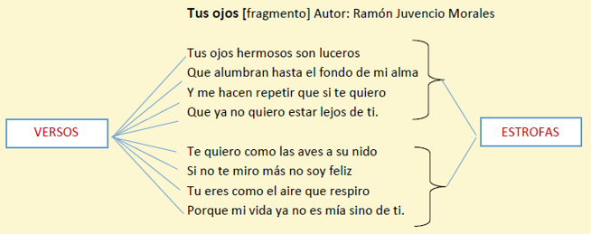
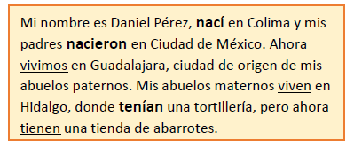
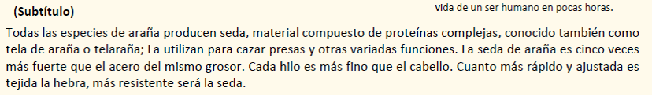
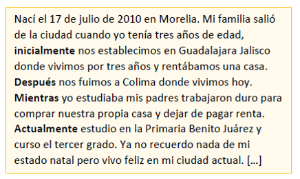
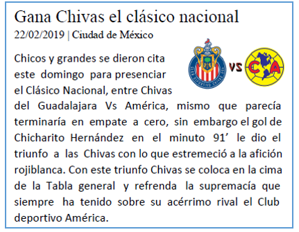
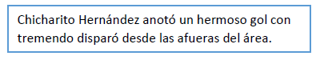
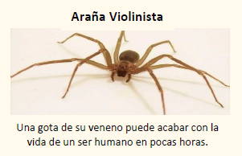
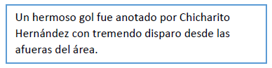

Elije un numero del 1 al 10


1. ¿Qué tipo de texto es?

2. ¿En qué tiempo verbal están las palabras resaltadas del texto?

3. ¿Qué nombre sería más adecuado para el subtítulo que falta?

4. ¿Qué tipo de texto es el siguiente?

5. ¿En qué sección de un periódico, se podría encontrar la noticia anterior?

6. ¿Qué tipo de narración es utilizado para narrar el siguiente texto?

7. ¿Cómo se llama el texto breve que explica al lector lo que se muestra en la ilustración?

8. Al emplear la paráfrasis después de una lectura:
9. Observa y elige la frase adjetiva.
10. ¿Qué tipo de narración es utilizado para narrar el siguiente texto?

Sigue Intentando

¡BatiGenial!